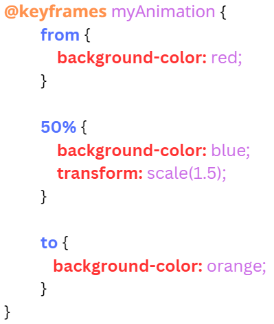

CSS անիմացիաները համարվուն են CSS3-ի առանձնահատկություններից մեկը։
Նրանց միջոցով կարելի է ստեղծել դինամիկ ոճերով էլէեմենտներ։
Անիմացիան թույլ է տալիս տարրին աստիճանաբար փոխել մի ոճից մյուսը:
Դրանով կարելի է ստեղծել անիմացիա չունենալով JavaScript-ի գիտելիքները։
Թույլ է տալիս վեբ-զնարկիչին կառավարել անիմացիաների հերթականությունը` դրանով իսկ բարձրացնելով դրա արտադրողականությունը և արդյունաբերությունը։
Ի տարբերություն CSS անցումների (transitions), որոնք փոխում եմ ոճի վիճակը երկու կադրերով (սկիզբն ու վերջը), այն փոխում է դա երկուսից ավել կադրերով, այսինքն՝ միջանկյալ կադրերով։
Անիմացիաներ ստեղծելու համար առաջին հեռթին պետք է ստեղծել բանալինային կադրեր (keyframes): Ամեն կադրը պարունակում է մի շարք հատկություններ, որոնք կփոխվեն դրան համապատասխան ժամանակաշրջաններում։
Բանալինային կադրեր (keyframes) սահմանելիս պետք է սահմանել 2 հիմնական կադրերը
Սակայն դրանց միջև կարելի է ավելացնել միջանկյալ կադրեր, որոնք նշվում են տոկոսներով (1%-99%)
Օրինակ
Ստանում է սահմանված բանալինային կադրերի (keyframes) անունը, որը կարգավորում է անիմացիայի կադրերը։
animation-name: անիմացիայի_անոն
Սահմանում է անիմացիայի մեկ ցիկլի տևողությունը։
animation-duration: ժամանակը (s, ms)
Սահմանում է անիմացիայի արագության բաշխումը ժամանակի ընթացքում։
animation-timing-function: linear | ease | ease-in | ease-out | ... | ժամանակային ֆունկցիա
Սահմանում է սպասման ժամանակը անիմացիայի սկզբից առաջ
animation-delay: ժամանակը (s, ms)
Սահմանում է անիմացիայի կրկնության քանակը:
animation-iteration-count: թիվ | infinite
infinite արժեքի դեպքում անիմացիան կրկնվում է անվերջ
Սահմանում է անիմացիայի անցման ուղղությունը:
animation-direction: normal | reverse | alternate | alternate-reverse
normal - նորմալ կադրերի հեռթականությունը
reverse - հակառակ կադրերի հեռթականություն
alternate - կենտ կրկնության դեպքում կադրերի հեռթականությանը նորմալ է, իսկ զույգի դեպքում՝ հակառակ
alternate-reverse - կենտ կրկնության դեպքում կադրերի հեռթականությանը հակառակ է, իսկ զույգի դեպքում՝ նորմալ
Սահմանում է էլէմենտի վիճակը անիմացիայի անցումից առաջ կամ հետո
animation-fill-mode: none | forward | backward | both
none - էլեմենտի ոճը մնում է սկզբնական վիճակում
forward - էլեմենտի ոճը ստանում է անիմացիայի վերջին կադրի վիճակը դրա ավարտից հետո
backward - էլեմենտի ոճը ստանում է անիմացիայի առաջին կադրի վիճակը դրա ավարտից հետո
both - էլեմենտը կվարվի ինչպես մինագամից և՛ forward-ի և՛ backward-ի արժեքների դեպքում
Սահմանում է անիմացիայի անցման վիճակը:
animation-play-state: paused | running
paused - կանգնման վիճակ
runnung - անցման վիճակ
Բոլոր վերը նշված հատկությունների միավորումն է։
animation: name duration timing-function delay iteration-count direction fill-mode
name - animation-name հատկության արժեք
duration - animation-duration հատկության արժեք
timing-function - animation-timing-function հատկության արժեք
delay - animation-delay հատկության արժեք
iteration-count - animation-iteration-count հատկության արժեք
direction - animation-direction հատկության արժեք
fill-mode - animation-fill-mode հատկության արժեք
@keyframes myAnimation {
from {
background-color: red;
}
50% {
background-color: blue;
transform: scale(1.5);
}
to {
background-color: orange;
}
}
div {
width: 100px;
height: 100px;
background-color: red;
border-radius: 50%;
margin: 70px auto;
}
div:hover {
animation-name: myAnimation;
animation-duration: 3s;
}
NPUA © 2024